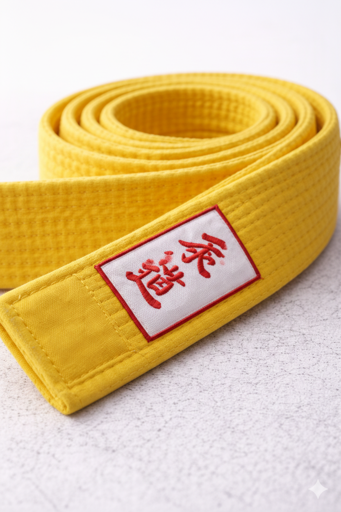
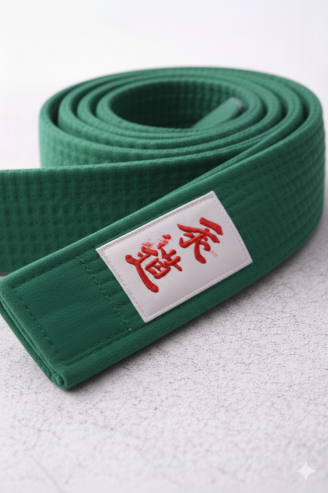
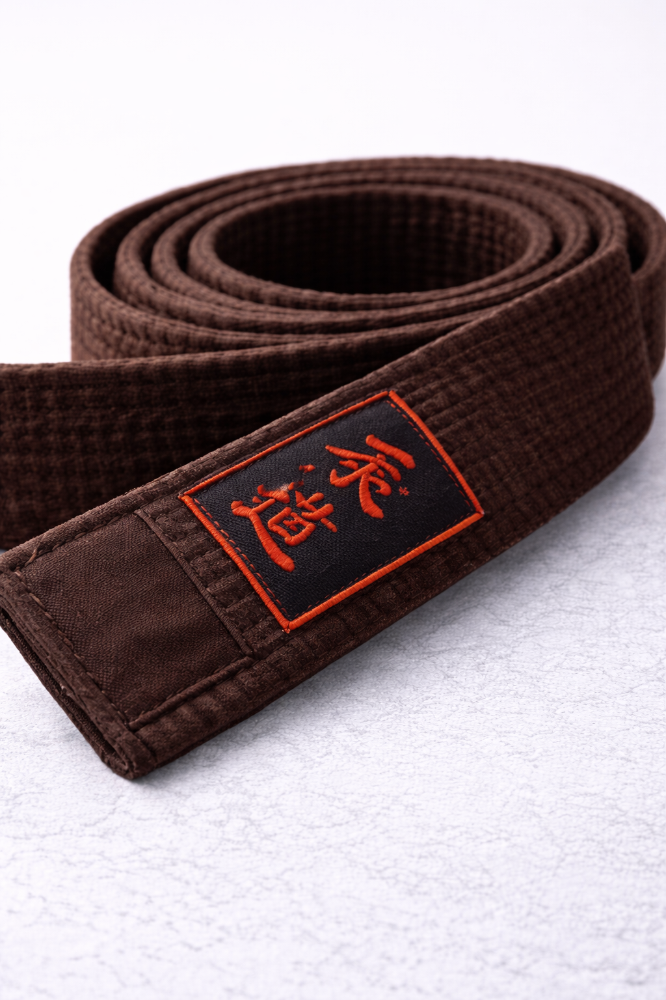

SHIRO 6EME KYU
- Largeur : 4.5 cm
- Coutures : 8 lignes
- Signification : Pureté / Début
"Le voyage de mille lieues commence par un seul pas. Symbole de la neige recouvrant la terre."

KIIRO 5EME KYU
- Largeur : 4.5 cm
- Matière : 100% Coton
- Signification : Éveil / Soleil
"Le premier rayon de lumière qui perce l'obscurité. La graine de la connaissance germe."

MIDORI 3EME KYU
- Largeur : 4.7 cm
- Niveau : Confirmé
- Signification : Croissance
"La plante s'élève vers le ciel. La technique commence à devenir fluide et réflexive."

CHAIRO 1ER KYU
- Poids : Standard ITJF
- Résistance : Haute Tension
- Signification : Maturité
"L'écorce de l'arbre. Le judoka possède désormais une base solide et inébranlable."

KURO 1ER DAN
- Finition : Soie Premium
- Broderie : Or 24K possible
- Signification : Expertise
"L'obscurité totale. Le cercle se referme pour recommencer une quête de perfection infinie."

CUSTOM UNIQUE
- Atelier : Kyoto, JP
- Délai : 15 jours
- Service : Sur mesure
Créez une pièce d'exception. Gravure de votre nom en Kanji et choix de la densité du tissu.